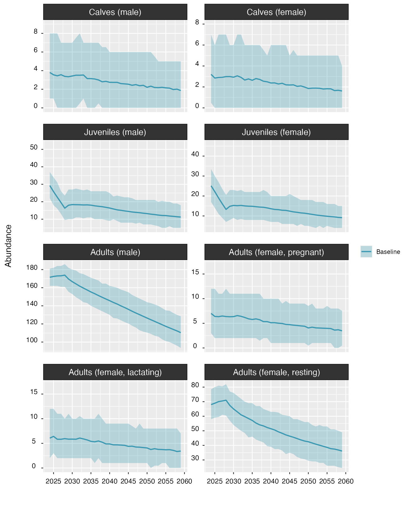
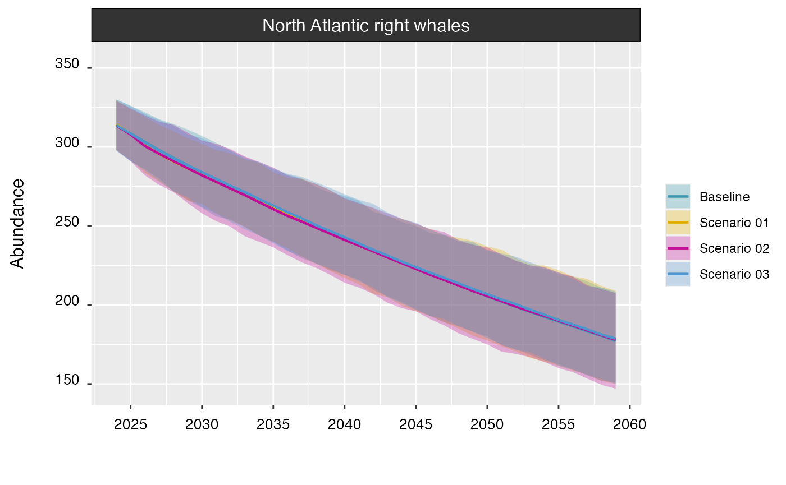
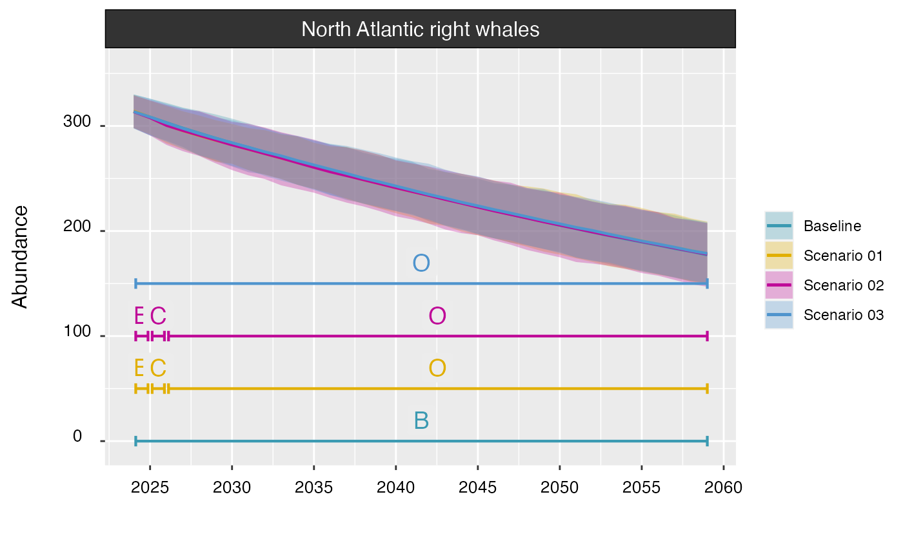
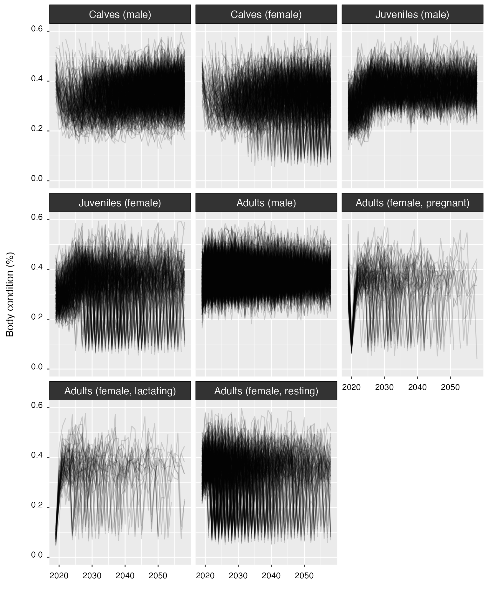
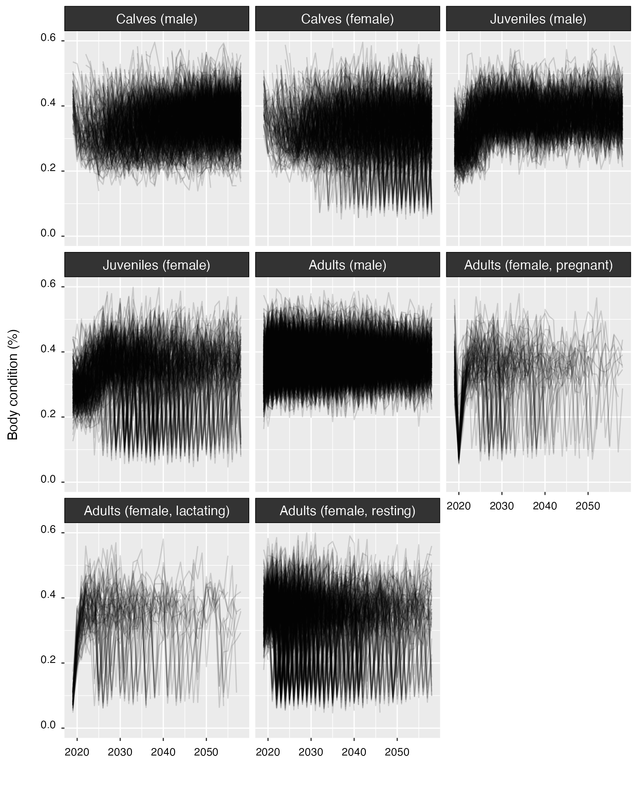
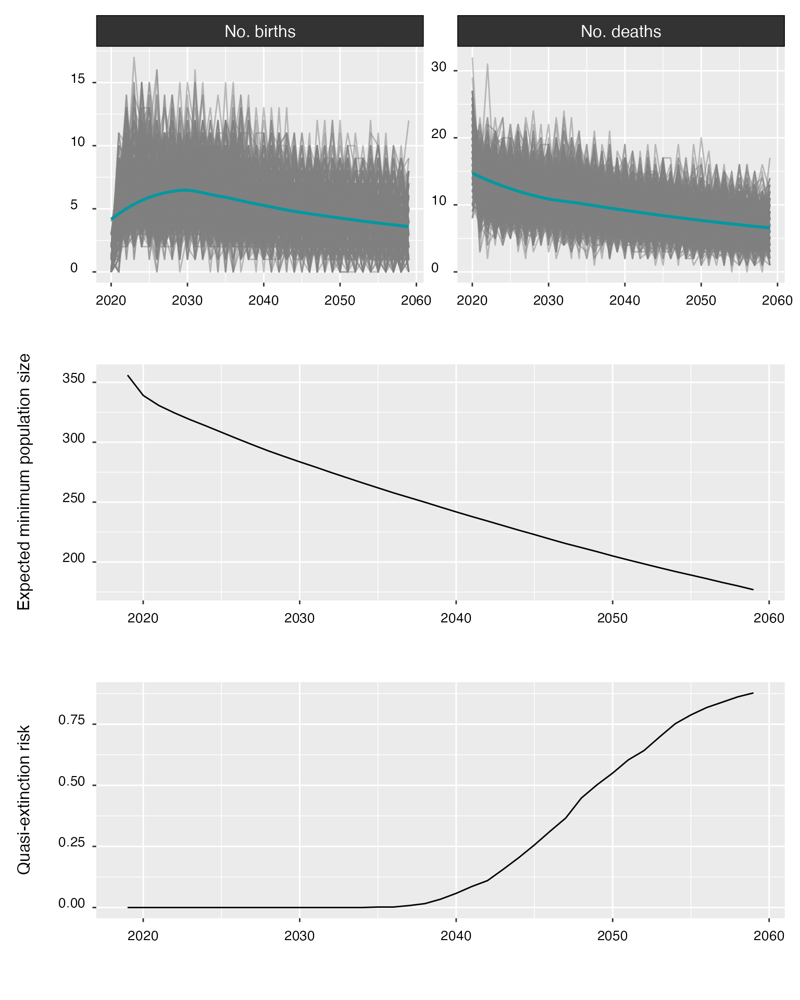

5. Model predictions
Phil Bouchet, Enrico Pirotta, Catriona Harris, Len Thomas
Centre for Research into Ecological & Environmental Modelling, University of St Andrews2024-04-25
model_predictions.RmdPreamble
This tutorial demonstrates how to generate predictions of right whale
abundance using the stochastic population model available in
narwind.
Quantifying uncertainty
When a run of the agent-based model completes, generalized additive models (GAMs) are fitted to simulation outputs to assess how the initial health of individuals within each population cohort affected their body condition and survival trajectories across the year. The fitted GAMs are critical as they inform the stochastic population model used to yield projections of future right whale population size.
Forward propagation of the uncertainty associated with GAM
coefficients is important for decision-making, and can be achieved using
the augment() function. augment() performs
random draws from the posterior distributions of GAM coefficients using
a Bayesian Metropolis-Hastings algorithm and returns replicate
realizations of the fitted smooths. See the accompanying project report
and the R help pages for technical details.
The code below shows how to use augment() in practice.
Note that the assignment operator <- must once again be
used to save the outputs of the function. To keep everything tidy and
avoid using unnecessary memory, we assign those outputs back to the
model_base object, effectively “augmenting” the object with
new data.
model_base <- augment(model_base)Note 5.1: The use of
augment()is not compulsory but is highly recommended. Population projections obtained without runningaugment()first will only account for process variance (i.e., the uncertainty resulting from replicate projections) and will return a warning.
The object model_base now contains an additional
component (called post, as shown below), which stores the
posterior draws of the model coefficients.
str(model_base, 1)
#> List of 10
#> $ sim :List of 6
#> $ gam :List of 2
#> $ dead :Classes 'data.table' and 'data.frame': 610 obs. of 25 variables:
#> ..- attr(*, ".internal.selfref")=<externalptr>
#> ..- attr(*, "index")= int(0)
#> .. ..- attr(*, "__whale")= int [1:610] 146 319 441 118 39 442 1 320 194 195 ...
#> $ birth :Classes 'data.table' and 'data.frame': 1000 obs. of 25 variables:
#> ..- attr(*, ".internal.selfref")=<externalptr>
#> ..- attr(*, "sorted")= chr "cohort"
#> ..- attr(*, "index")= int(0)
#> .. ..- attr(*, "__cohort__whale")= int(0)
#> $ abort :Classes 'data.table' and 'data.frame': 1000 obs. of 2 variables:
#> ..- attr(*, ".internal.selfref")=<externalptr>
#> $ param :List of 11
#> $ init :List of 3
#> $ run : 'hms' num 01:33:14
#> ..- attr(*, "units")= chr "secs"
#> $ scenario:List of 12
#> ..- attr(*, "class")= chr [1:2] "narwscenario" "list"
#> $ post :List of 7
#> - attr(*, "class")= chr [1:2] "narwsim" "list"
#> - attr(*, "seed")= int 9443Predicting abundance
The predict() method implements a stochastic population
model which allows users to generate projections of right whale
abundance over a time horizon of interest.
The table below details the arguments that predict()
accepts.
| Argument | Default value | Description |
|---|---|---|
obj |
- |
One or more objects of class narwsim, as returned by
narw(). |
n |
100 |
Integer. Number of replicates projections. |
yrs |
35 |
Integer. Time horizon, specified either as the desired number of
years (from current) or the desired target end year. Defaults to
35, which is commensurate with the expected average
lifespan of a typical wind farm. |
param |
TRUE |
If TRUE, prediction variance includes parameter
uncertainty. |
piling |
1 |
Integer. Year of construction. By default, piling occurs on the first year of the projection, followed by operation and maintenance for the remainder. |
progress |
TRUE |
Logical. If TRUE, a progress bar is printed to the R
console during execution. |
Projection horizon
By default, projections are set to 35 years (from current), as this
aligns with the average expected lifespan of a typical wind farm.
Longer/shorter projections can be obtained by modifying the
yrs argument, which can either be specified as a desired
number of years or as a target year for the end of the projection.
For instance, the two lines of code below are equivalent and yield predictions of population size over the next 50 years (given that the current year at the time of writing is 2024).
Replicate projections
In narwind, prediction uncertainty is estimated from
both process variance (i.e., repeat projections) and parameter
uncertainty (i.e., statistical uncertainty in the relationships between
individual body condition and health/survival, respectively). The latter
is considered only if replicate coefficients have been sampled from the
posteriors of the fitted survival and body condition GAMs using the
augment() function (see previous section).
The n argument controls the number of replicate
projections and is set to 100 by default. Generating a
single projection instead is straightforward, as shown here:
preds_n1 <- predict(model_base, n = 1)Schedule of development
Population projections involve three successive phases: a baseline
phase without wind farm activity between 2019 and the current year
(e.g., 2024), followed by an optional, one-year construction phase, and
an operational phase that lasts for the remainder of the projection. The
timing of construction and operation and maintenance activities within
the time horizon of a projection is defined by the ** scenario bundle**
(i.e., one or more R objects containing the outputs of one or more runs
of the agent-based model) which is passed to predict().
There are several possible options:
-
Baseline conditions only – no wind farm development activities occur during the projection. This only requires a single run of the agent-based model (and therefore a single R object). For example, using the
model_baselineobject created in previous tutorials:proj_baseline <- predict(model_base) -
Operation and maintenance only – no construction activities are considered, however maintenance and servicing operations apply throughout the projection. This requires two runs of the agent-based model (and therefore, two R objects), corresponding to baseline conditions and an operation scenario (e.g., the third preset scenario within the package), respectively. Multiple R objects can be given in sequence, separated by commas:
proj_OM <- predict(model_base, model_03) -
Construction, followed by 0&M. Here, piling activities take place during a single year, and are followed by maintenance operations for the remainder. By default,
predict()assumes that piling occurs at the onset of the projection (i.e., in year 1, the current year), such that thepilingargument is set to1. Three separate runs of the agent-based model are needed in this instance, for baseline conditions, a construction scenario (e.g.,model_01), and an operation scenario (e.g.,model_03) respectively. For exampleproj_construction <- predict(model_base, model_01, model_03)
Note 5.2:
predict()cannot process more than one scenario bundle at a time. Therefore, separate calls topredict()must be made to compare population projections for multiple, alternative scenarios such as those involving different schedules of piling, different wind farm sites etc.
Plotting projections
Population trends can be visualized using the plot()
command, which takes the following arguments:
| Argument | Default value | Description |
|---|---|---|
diff |
FALSE |
Logical. If TRUE, returns plots of the differences
between pairs of projections. Defaults to FALSE. |
interval |
TRUE |
Logical. If TRUE, percentile confidence intervals are
shown on the plots. |
shade |
TRUE |
Logical. If TRUE, confidence intervals are displayed as
colored ribbons. Otherwise, confidence bounds are shown as dotted
lines. |
cohort |
FALSE |
Logical. If TRUE, separate plots are returned for each
population cohort. If FALSE, a single plot of the overall
population trend is shown. |
noaa |
FALSE |
Logical. If TRUE the population trajectory predicted as
part of NOAA’s population viability analysis (Runge et al., 2023) is
also plotted. Defaults to FALSE. |
full |
FALSE |
Logical. If TRUE, the trend plot includes historical
population size estimates (dating back to 2000). |
timeline |
FALSE |
Logical. If TRUE, the plot includes timeline(s) of
offshore wind development. |
timeline.y |
0 |
Numeric. Position of the timeline on the y-axis. |
scales |
"free" |
Character. Defines whether axis scales should be constant or vary
across plots. Can be one of "fixed" or "free"
(the default). |
ncol |
3 |
Integer. Number of columns for the plot layout when
cohort = TRUE. |
nx |
5 |
Integer. Desired number of x-axis intervals. Non-integer values are rounded down. |
ny |
5 |
Integer. Desired number of y-axis intervals. Non-integer values are rounded down. |
By default, a simple call to plot() will return the
overall population trend.
plot(proj_base)When set to TRUE, the cohort argument shows
time series of abundance for each population cohort, rather than for the
whole population.
plot(proj_base, cohort = TRUE)
The interval argument can be set to FALSE
to hide confidence intervals around the trend.
plot(proj_base, interval = FALSE)
Setting the noaa argument to TRUE will
overlay the population trend estimated by Runge
et al. (2023).
plot(proj_base, noaa = TRUE)Multiple projections can be plotted together for comparison:
plot(proj_base, proj_01, proj_02, proj_03)
If needed, the schedule(s) of development can be displayed as well by
setting timeline to TRUE. Here, B = Baseline,
C = Construction, and O = Operation & Maintenance.
plot(proj_base, proj_01, proj_02, proj_03, timeline = TRUE)
If labels are incorrect (or an error related to labeling occurs),
projections can be relabeled using the label() function,
which takes the projection object as the first argument, and the new
label (between quotation marks) as the second argument. Do not forget to
assign the output back to the original projection object to overwrite
the previous label. For example:
proj_01 <- label(proj_01, "Scenario 01")If predicted trends are similar, the resulting plot can be difficult
to interpret. An alternative way of comparing trends is to compute the
difference in predicted abundance between each pair of replicate
projections. This can be done by setting the diff argument
to TRUE. There is no evidence for a difference between
projections if the resulting confidence interval overlaps zero.
plot(proj_base, proj_01, proj_02, proj_03, diff = TRUE)
#> Scale for y is already present.
#> Adding another scale for y, which will replace the existing scale.
Summarizing projections
The summary() method also works on projections and
returns useful information on:
Abundance estimates at the end of the projection, both for the population as a whole and for each cohort.
Estimates of model parameters, including mortality, individual health, and fecundity.
Estimates of the population’s probability of quasi-extinction, i.e., the probability that the number of reproductive females falls below N = 50 (Runge et al. 2023).
summary(proj_base)
#> -------------------------------------------------------------
#> -------------------------------------------------------------
#>
#> NORTH ATLANTIC RIGHT WHALE (Eubalaena glacialis)
#>
#> *** POPULATION MODEL SUMMARY ***
#>
#> -------------------------------------------------------------
#> -------------------------------------------------------------
#>
#> Replicates: N = 100
#> Projection horizon: 35 years
#>
#> Timeline:
#> Baseline (yr 1 to 35)
#>
#> =============================================================
#> ABUNDANCE
#> =============================================================
#>
#> Initial population size:
#> N = 356
#>
#> cohort N
#> --------------------------- ----
#> Calves (male) 9
#> Juveniles (male) 45
#> Adults (male) 168
#> Calves (female) 8
#> Juveniles (female) 39
#> Adults (female, pregnant) 17
#> Adults (female, lactating) 13
#> Adults (female, resting) 57
#> Total 356
#>
#> Final population size:
#> N = 153 (95% CI: 118 – 181)
#>
#> cohort N
#> --------------------------- ----------------------
#> Calves (male) 2 (95% CI: 0 – 5)
#> Juveniles (male) 10 (95% CI: 4 – 17)
#> Adults (male) 85 (95% CI: 68 – 103)
#> Calves (female) 1 (95% CI: 0 – 4)
#> Juveniles (female) 10 (95% CI: 4 – 16)
#> Adults (female, pregnant) 3 (95% CI: 1 – 7)
#> Adults (female, lactating) 3 (95% CI: 0 – 7)
#> Adults (female, resting) 37 (95% CI: 23 – 48)
#>
#> =============================================================
#> HEALTH & MORTALITY
#> =============================================================
#> cohort survival body condition min condition (gestation)
#> -------- ------------------------ ------------------------ ---------------------------
#> c(m,f) 0.722 ± 0.233 [0–1] 0.29 ± 0.186 [0–0.613] -
#> jv(ml) 0.976 ± 0.04 [0.714–1] 0.287 ± 0.073 [0–0.581] -
#> jv(fml) 0.979 ± 0.038 [0.714–1] 0.293 ± 0.07 [0–0.637] -
#> ad(ml) 0.966 ± 0.017 [0.893–1] 0.36 ± 0.087 [0–0.665] -
#> ad(f,p) 0.972 ± 0.082 [0–1] 0.398 ± 0.104 [0–0.665] -
#> ad(f,l) 0.907 ± 0.155 [0–1] 0.097 ± 0.047 [0–0.36] -
#> ad(f,r) 0.955 ± 0.029 [0.8–1] 0.348 ± 0.095 [0–0.665] 0.496 ± 0.06 [0.161–0.713]
#>
#> =============================================================
#> FECUNDITY
#> =============================================================
#>
#> Calving events
#> ----------------------------------
#> Per year: N = 4.8 ± 2.46 [0–17]
#> Per female: N = 0.38 ± 0.91 [0–8]
#>
#> Resting phase
#> -----------------------------
#> t(rest): 5 ± 5 [1–39]
#> t(inter-birth): 8 ± 4 [2–40]
#>
#> Non-reproductive females:
#> 4.28 (±1.02) [0–8] %
#>
#> Abortion Simulation (%) Projection (%)
#> --------- --------------- ---------------------
#> Baseline 2.3 2.8 (±10.28) [0–100]
#>
#>
#> =============================================================
#> POPULATION VIABILITY
#> =============================================================
#>
#> year p(quasi-extinct)
#> ----- -----------------
#> 2024 0.00
#> 2029 0.00
#> 2034 0.00
#> 2039 0.01
#> 2044 0.18
#> 2049 0.47
#> 2054 0.73
#> 2059 0.87